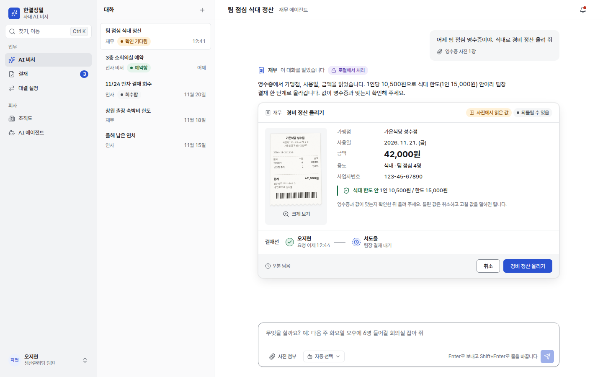
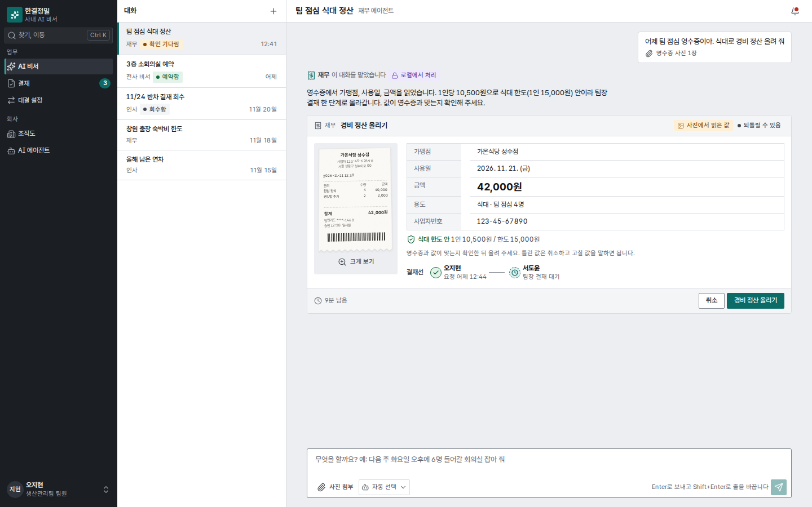
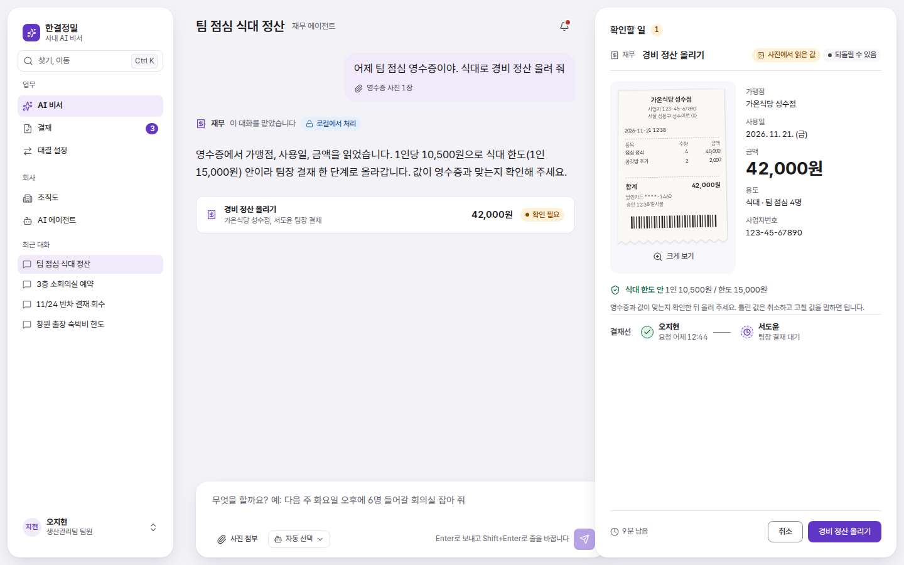
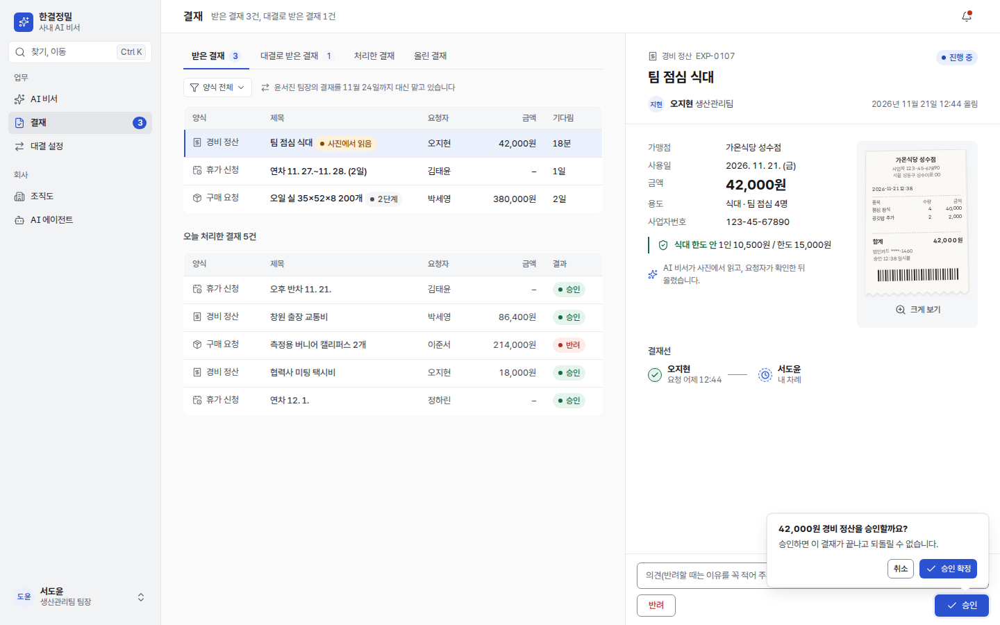
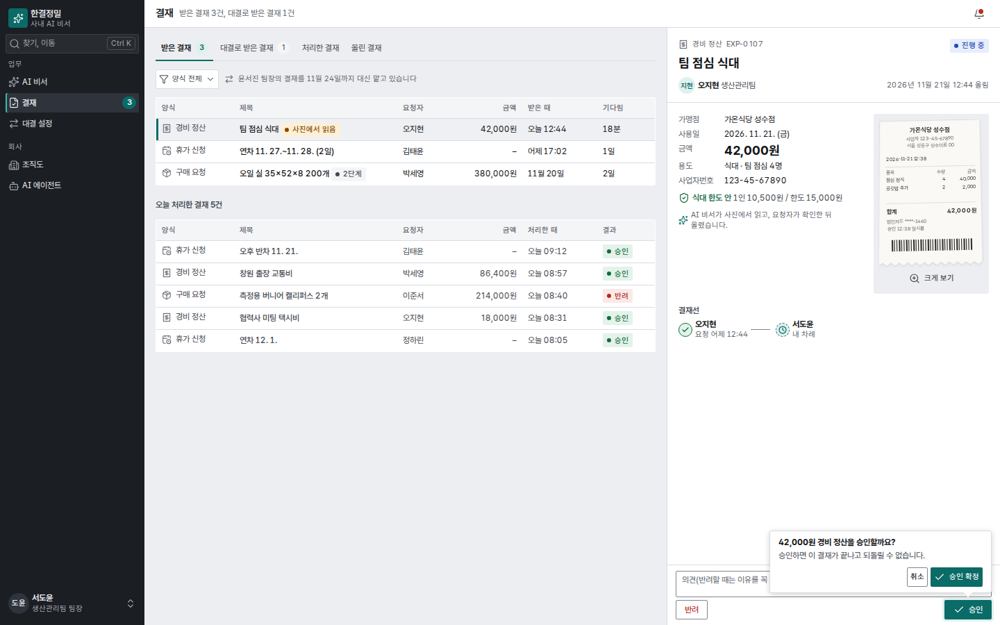
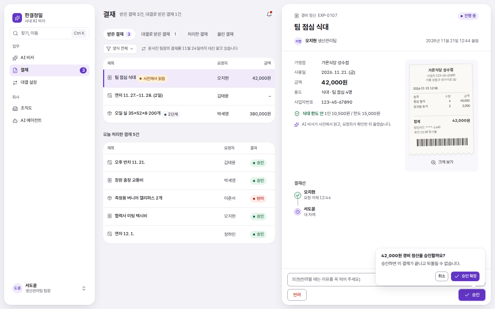

같은 데이터와 같은 구조(왼쪽 탐색 막대, 결재 목록과 상세 나란히)에 방향만 바꿨습니다. 직원 오지현이 팀 점심 영수증으로 경비 정산을 올리고(AI 비서), 팀장 서도윤이 그 문서를 승인하는(결재) 장면입니다. 회사·사람·가게는 지어낸 것입니다. 그림을 누르면 실제 HTML이 열립니다.
Linear식 셸, Geist식 회색 척도, Ramp식 경비·결재. 중간 밀도, 코발트 강조.
Linear, Geist, Carbon. 흑연색 탐색 막대와 각진 표, 밀도 높음, 석유청록 강조.
Fluent 2, Ramp, Geist. 떠 있는 패널, 넓은 여백, 확인할 일은 오른쪽 패널, 자두색 강조.





